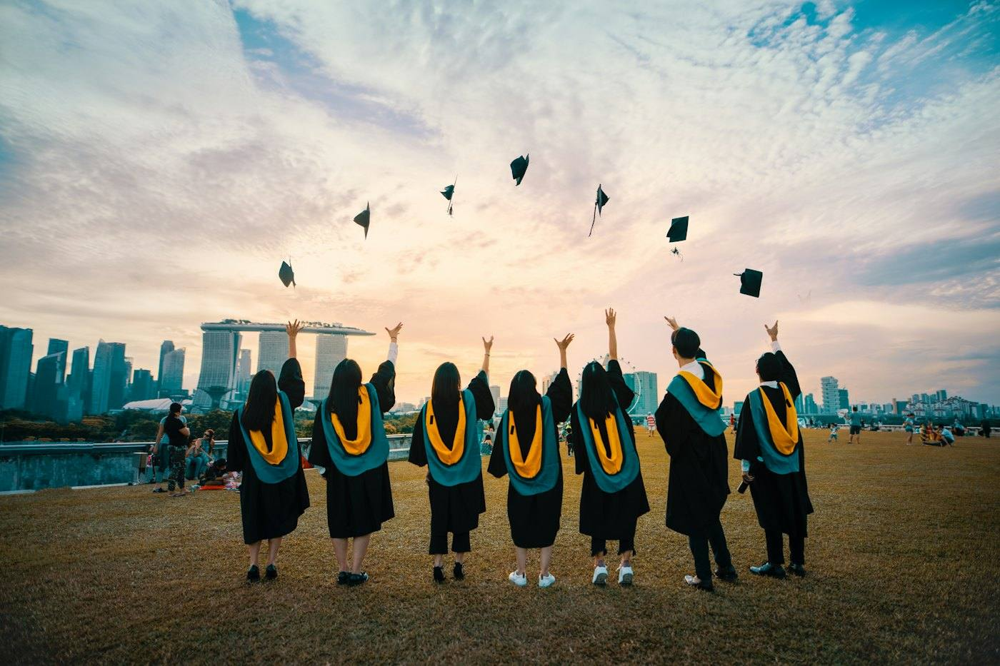
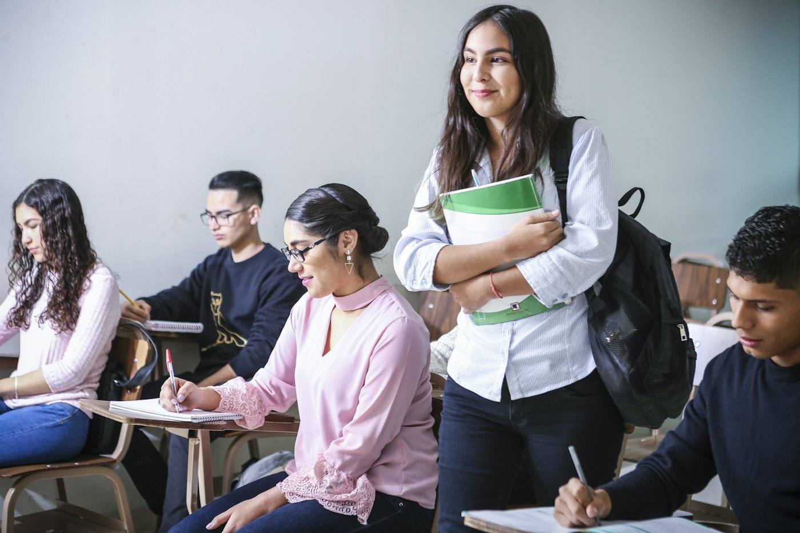
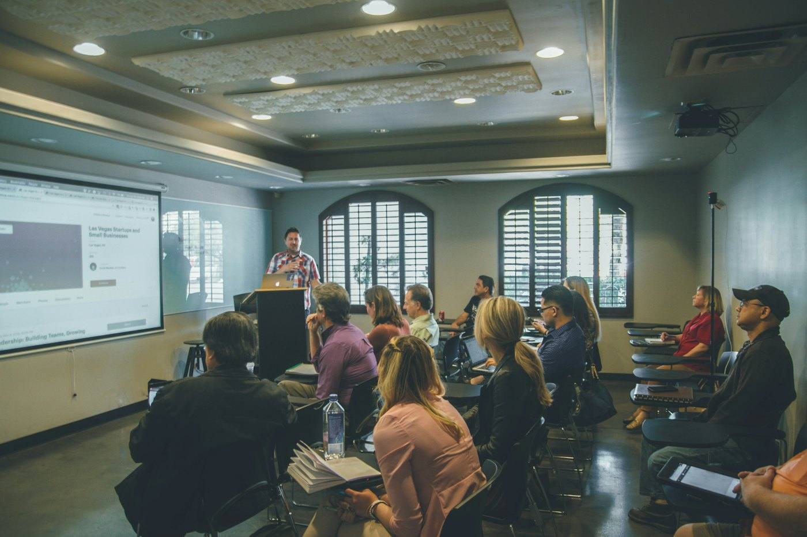
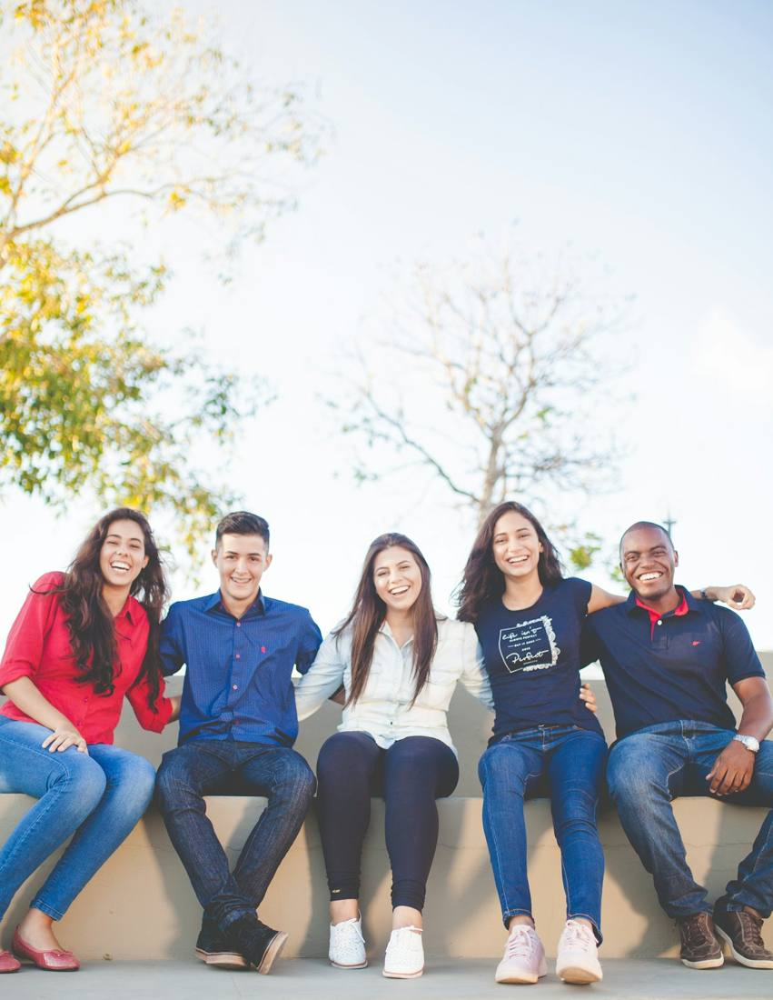
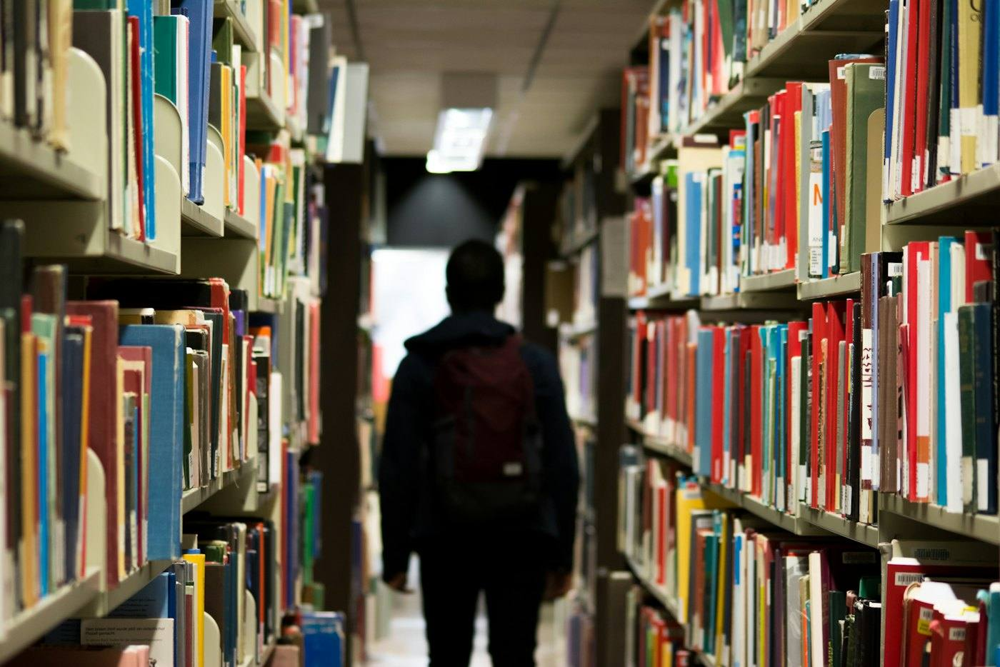
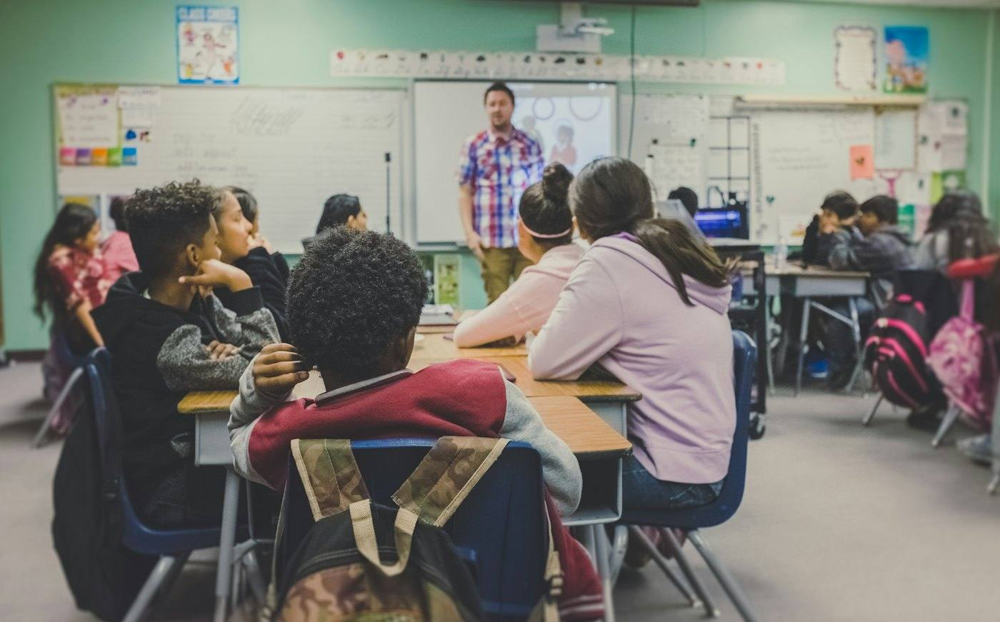
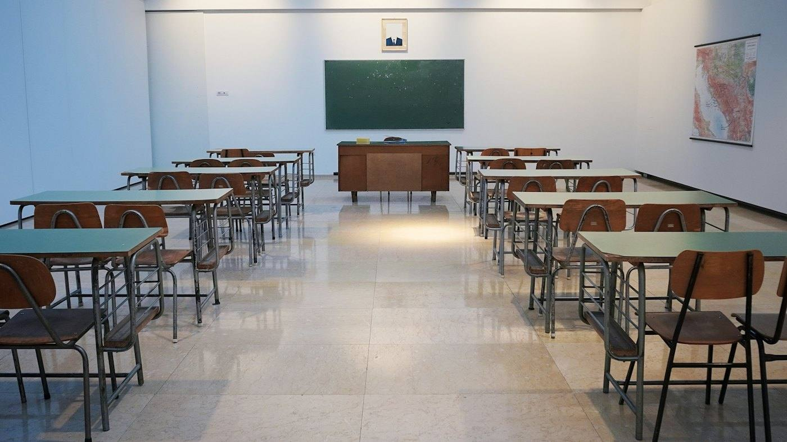
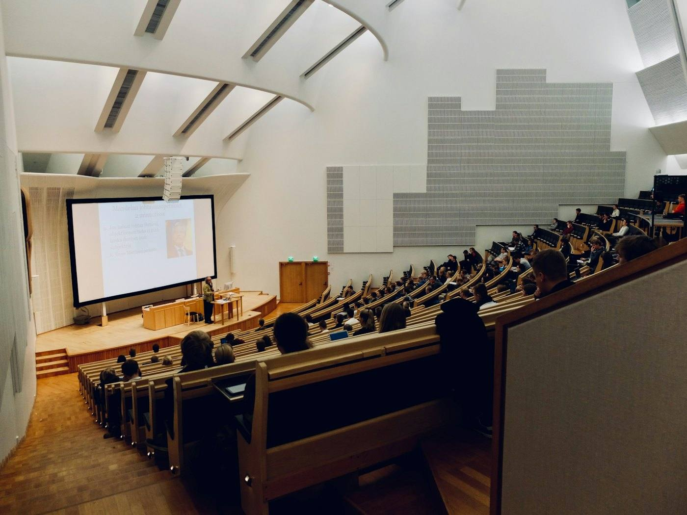
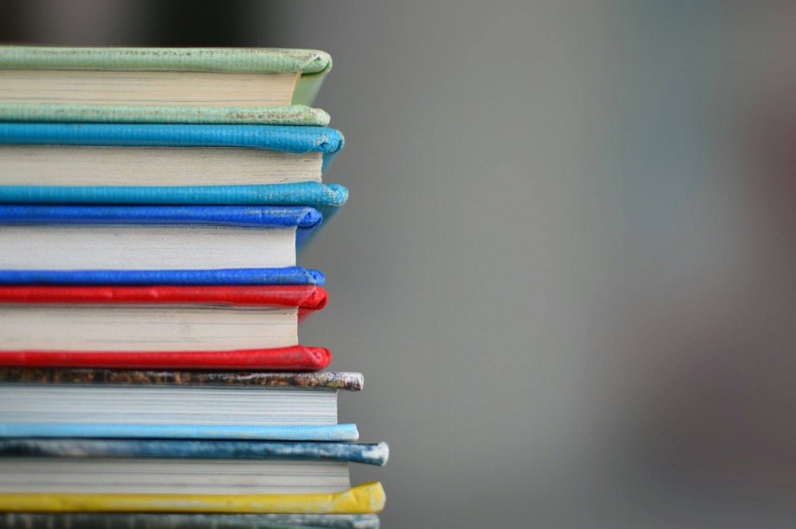

📖
Tahfidz & Keaswajaan
Hafalan Juz 30, kajian kitab kuning dasar, dan pembiasaan amaliyah harian seperti sholat dhuha berjamaah dan istighotsah.

SMA Wachid Hasyim 2 Taman membentuk generasi muda yang unggul dalam ilmu pengetahuan, kokoh dalam iman, dan santun dalam akhlak — siap melangkah ke perguruan tinggi dan dunia nyata.
Puji syukur kehadirat Allah SWT, website resmi SMA Wachid Hasyim 2 Taman kini hadir sebagai jendela informasi bagi siswa, orang tua, alumni, dan masyarakat luas.
Kami berkomitmen menghadirkan pendidikan yang memadukan keunggulan akademik dengan pembentukan karakter berlandaskan nilai-nilai Ahlussunnah wal Jama'ah. Setiap anak memiliki potensi istimewa, dan tugas kami adalah menumbuhkannya dengan sepenuh hati.
Mari bersama membangun generasi yang cerdas, berakhlak mulia, dan bermanfaat bagi agama, bangsa, serta sesama.

“Terwujudnya peserta didik yang beriman, bertakwa, berakhlakul karimah, unggul dalam prestasi, dan berwawasan global berlandaskan Ahlussunnah wal Jama'ah.”
SMA Wachid Hasyim 2 Taman berdiri di bawah naungan Yayasan Pendidikan Wachid Hasyim dan LP Ma'arif NU, mengambil nama dari KH. Abdul Wahid Hasyim — pahlawan nasional dan tokoh pembaruan pendidikan Islam di Indonesia.
Berawal dari semangat warga Nahdliyin di Taman untuk menghadirkan sekolah menengah yang memadukan ilmu umum dan agama, sekolah ini terus berkembang hingga kini dipercaya ratusan keluarga setiap tahunnya.
| Nama Sekolah | SMA Wachid Hasyim 2 Taman |
| NPSN | 205xxxxx |
| Status | Swasta |
| Akreditasi | A (Unggul) |
| Naungan | Yayasan Wachid Hasyim · LP Ma'arif NU |
| Alamat | Kec. Taman, Kab. Sidoarjo, Jawa Timur |
| Kurikulum | Kurikulum Merdeka |
Enam pilar program yang membentuk lulusan cerdas, religius, dan siap bersaing.
Hafalan Juz 30, kajian kitab kuning dasar, dan pembiasaan amaliyah harian seperti sholat dhuha berjamaah dan istighotsah.
Pendampingan intensif SNBP & SNBT, try out berkala, dan konseling karier bersama alumni di kampus favorit.
Coding, desain grafis, dan robotik sebagai bekal literasi digital dan kesiapan menghadapi era teknologi.
Penguatan bahasa asing melalui conversation day, debat, dan lomba pidato bilingual.
Pembinaan OSN, Karya Tulis Ilmiah, dan proyek P5 berbasis masalah nyata di lingkungan sekitar.
Market day, inkubasi usaha siswa, dan kunjungan industri untuk menumbuhkan jiwa mandiri.
Prestasi akademik maupun non-akademik di tingkat kabupaten, provinsi, hingga nasional. (Data contoh untuk prototipe.)

KegiatanPuluhan alumni yang kini kuliah di berbagai PTN berbagi pengalaman, strategi belajar, dan tips lolos SNBT kepada siswa kelas XII.

OSIS
Literasi
Akademik


Pendaftaran Siswa Baru dibuka dalam 3 gelombang. Daftar lebih awal untuk mendapatkan potongan biaya dan beasiswa prestasi.